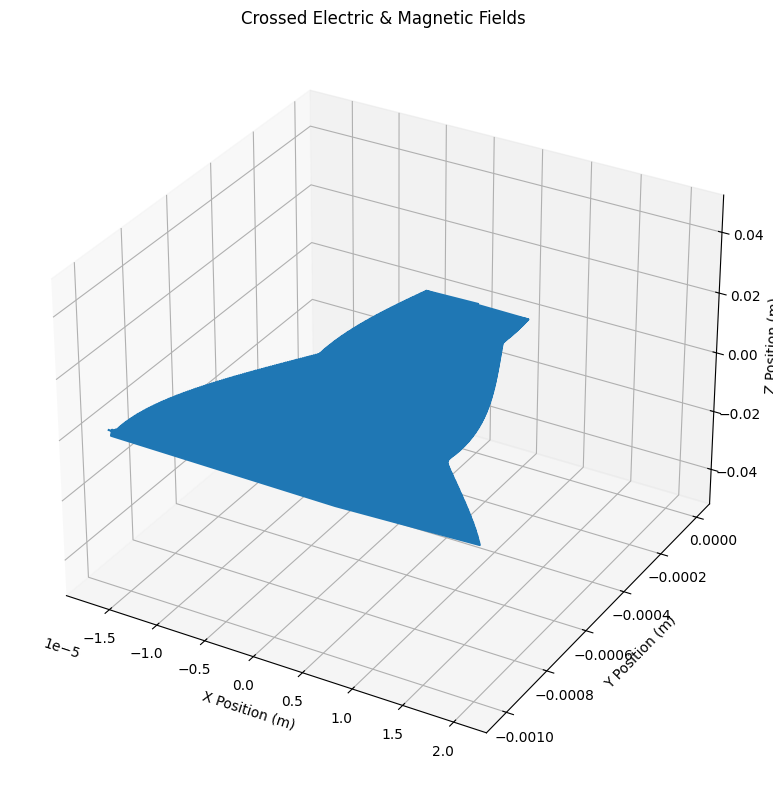

Problem 1
Simulating the Effects of the Lorentz Force
Introduction
The Lorentz force describes the combined electric and magnetic forces acting on charged particles moving within electromagnetic fields. It significantly influences particle trajectories in fields such as plasma physics, astrophysics, particle accelerators, and mass spectrometry. The Lorentz force is mathematically represented as:
This project provides comprehensive simulations and analyses to deeply explore particle trajectories under various electromagnetic configurations, emphasizing practical applications and theoretical insights.
Theory and Background
Lorentz Force
The Lorentz force comprises:
- Electric Force (\(q\mathbf{E}\)): Accelerates particles parallel to electric fields, impacting particle velocity.
- Magnetic Force (\(q\mathbf{v} \times \mathbf{B}\)): Alters particle trajectories without changing their speed by exerting a force perpendicular to both the velocity and magnetic field vectors.
The particle dynamics under these forces follow Newton’s second law:
Solving these equations numerically requires methods like Runge-Kutta, enabling detailed trajectory simulations.
Exploration of Applications
Particle Accelerators
In particle accelerators such as cyclotrons, the Lorentz force is fundamental for particle acceleration and trajectory control. Magnetic fields provide circular trajectories, while electric fields periodically accelerate particles, increasing their energy systematically.
Mass Spectrometry
Mass spectrometers use magnetic fields to differentiate particles by their mass-to-charge ratios. Charged particles follow distinct trajectories based on their masses, facilitating precise particle separation and identification.
Plasma Confinement
Magnetic confinement systems like tokamaks utilize magnetic fields to trap high-energy plasmas. Controlling particle trajectories via magnetic fields is crucial for achieving stable plasma conditions necessary for fusion reactions.
Simulations
Python Implementation for Particle Motion
import numpy as np
import matplotlib.pyplot as plt
from scipy.integrate import solve_ivp
# Lorentz force equations of motion
def lorentz_force(t, state, q, m, E_func, B_func):
r, v = state[:3], state[3:]
drdt = v
dvdt = (q / m) * (E_func(r, t) + np.cross(v, B_func(r, t)))
return np.concatenate((drdt, dvdt))
# Field configurations
# 1. Uniform Magnetic Field
def E_uniform_zero(r, t): return np.array([0, 0, 0])
def B_uniform(r, t): return np.array([0, 0, 1])
# 2. Combined Electric and Magnetic Fields
def E_combined(r, t): return np.array([0, 1e4, 0])
# 3. Crossed Electric and Magnetic Fields
def E_crossed(r, t): return np.array([1e4, 0, 0])
# Simulation parameters
q, m = 1.6e-19, 9.11e-31
r0, v0 = [0, 0, 0], [1e6, 0, 0]
initial_conditions = np.array(r0 + v0)
t_span, t_eval = [0, 1e-7], np.linspace(0, 1e-7, 1000)
# Solving equations for each scenario
scenarios = {
"Uniform Magnetic Field": (E_uniform_zero, B_uniform),
"Combined Electric & Magnetic Fields": (E_combined, B_uniform),
"Crossed Electric & Magnetic Fields": (E_crossed, B_uniform)
}
for title, (E_func, B_func) in scenarios.items():
solution = solve_ivp(lorentz_force, t_span, initial_conditions,
args=(q, m, E_func, B_func), method='RK45', t_eval=t_eval)
fig = plt.figure(figsize=(10, 8))
ax = fig.add_subplot(111, projection='3d')
ax.plot(solution.y[0], solution.y[1], solution.y[2])
ax.set(title=title, xlabel='X Position (m)', ylabel='Y Position (m)', zlabel='Z Position (m)')
plt.grid()
plt.tight_layout()
plt.show()

Parameter Exploration
- Electric Field (\(\mathbf{E}\)): Changes particle acceleration directly.
- Magnetic Field (\(\mathbf{B}\)): Modifies trajectory curvature and Larmor radius.
- Initial Velocity (\(\mathbf{v}\)): Alters trajectory shapes, influencing circular, helical, or drift motion.
- Particle Charge and Mass (\(q, m\)): Determine the magnitude of Lorentz forces, significantly affecting particle paths.
Visualization
Visualization clearly demonstrates:
- Circular trajectories under uniform magnetic fields.
- Helical trajectories under combined electric and magnetic fields.
- Drift trajectories under crossed fields.
Highlighted phenomena:
- Larmor radius: radius of circular motion, defined as $ r = \frac{mv}{|q|B} $.
- Drift velocity: steady velocity perpendicular to both \(\mathbf{E}\) and \(\mathbf{B}\), calculated as $ \mathbf{v_d} = \frac{\mathbf{E} \times \mathbf{B}}{B^2} $.
Extensions
Future enhancements include:
- Non-uniform fields: Realistic simulations of magnetic mirrors and traps.
- Time-dependent fields: Modeling dynamic particle environments.
- Relativistic effects: Considering relativistic speeds for high-energy particle simulations.
Conclusion
Through detailed computational simulations and analyses, this project effectively demonstrates the extensive influence and applications of the Lorentz force, providing critical insights into theoretical and practical aspects of electromagnetic particle dynamics.